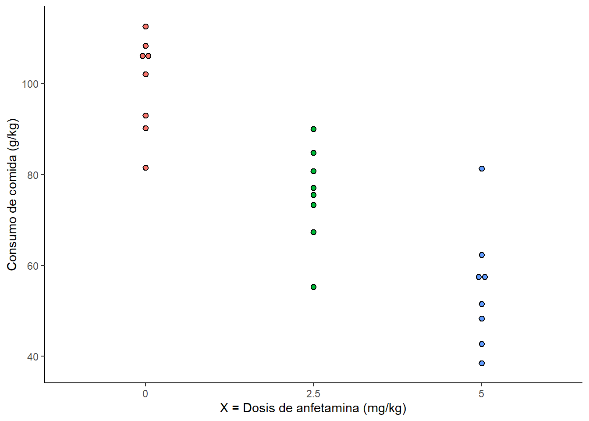

Lección 7 Correlación y regresión lineal
La correlación lineal y regresión lineal son técnicas basadas en ajustar una línea recta a nuestros datos. Estos análisis usualmente consisten de un par de observaciones (\(X, Y\)).
Ejemplo: La anfetamina es una droga que suprime el apetito. En un estudio, investigadores alocaron aleatoriamente a 24 ratas a tres distintos grupos de tratamientos para recibir una inyección de anfetamina a distintas dosis y una inyección con solución salina. Se midió la cantidad de comida consumida por cada animal 3 horas después de la inyección. Los resultados (g de comida consumidos por kg de peso) se muestran en la siguiente tabla.
| X = 0 | X = 2.5 | X = 5 |
|---|---|---|
| 112.6 | 73.3 | 38.5 |
| 102.1 | 84.8 | 81.3 |
| 90.2 | 67.3 | 57.1 |
| 81.5 | 55.3 | 62.3 |
| 105.6 | 80.7 | 51.5 |
| 93.0 | 90.0 | 48.3 |
| 106.6 | 75.5 | 42.7 |
| 108.3 | 77.1 | 57.9 |
A continuación tenemos una gráfica de dispersión con los valores de la tabla 7.1.

Este es un ejemplo de dos variables que se encuentran en pares (Consumo de comida y dosis de anfetamina).
7.1 El coeficiente de correlación \(r\)
Supongamos que tenemos \(n\) número de par de observaciones, con cada par representado por dos variables, \(X\) y \(Y\). Si realizamos un gráfico de dispersión y vemos una tendencia lineal general, es natural intentar describir la fuerza de la asociación. Para realizar esto utilizamos el coeficiente de correlación.
Ejemplo: En un estudio de una población silvestre de la serpiente Vipera bertis, investigadores capturaron y midieron nueve hembras adultas. Se midió su peso así como su longitud. Estos valores se muestran en la tabla 7.2 y en el gráfico de dispersión de la figura 7.1.
| Longitud (cm) | Peso (g) | |
|---|---|---|
| 60.0 | 136.0 | |
| 69.0 | 198.0 | |
| 66.0 | 194.0 | |
| 64.0 | 140.0 | |
| 54.0 | 93.0 | |
| 67.0 | 172.0 | |
| 59.0 | 116.0 | |
| 65.0 | 174.0 | |
| 63.0 | 145.0 | |
| Media | 63.0 | 152.0 |
| SD | 4.6 | 35.3 |
Figura 7.1: Regresión lineal del peso y longitud de 9 serpientes hembra.
Como podemos ver, parece ser que existe una asociación positiva entre la longitud y el peso de las serpientes. Por lo tanto, si una serpiente es más larga que el promedio \(\overline{x} = 63\) también tenderá a ser más pesada que el promedio \(\overline{y} = 152\). La línea que tenemos en el gráfico se conoce como línea de cuadrados mínimos o regresión lineal ajustada de \(Y\) en \(X\).
7.1.1 Midiendo la fuerza de la asociación
Para medir la fuerza de nuestra asociación utilizamos el coeficiente de correlación, \(r\). Carece de escala por lo que no es afectado por cambios en las unidades de medición. Para entender su funcionamiento, consideremos los datos de las serpientes transformados en valores \(Z\).
Figura 7.2: Gráfico de dispersión de la longitud estandarizada contra el peso estandarizado.
Como podemos ver en la gráfica, la mayoría de nuestros puntos caen en el cuadrante superior derecho y el inferior izquierdo. Los puntos que caigan en estos cuadrantes tendrán valores \(Z\) cuyos productos (\(z_x z_y\)) son positivos. De igual manera, cualquier punto que caiga en el cuadrante superior izquierdo e inferior derecho tendrá valores \(Z\) cuyos productos serán negativos.
En nuestro caso, existe una asociación positiva entre la longitud y el peso de las serpientes, ya que la mayoría de nuestros puntos caen en cuadrantes con productos positivos, por ende, la suma de los productos estandarizados dará un valor positivo. Si no existiera una relación lineal en nuestros datos, los puntos estarían distribuidos de manera aleatoria en los cuadrantes y la suma de los productos sería 0.
De hecho, el coeficiente de correlación está basado en esta suma. Se computa como el promedio de los productos de los valores estandarizados y se obtiene de la siguiente manera:
\[\begin{equation} r = \frac{1}{n - 1}\sum_{i=1}^n (\frac{x_i - \overline{x}}{s_x})(\frac{y_i - \overline{y}}{s_y}) \tag{7.1} \end{equation}\]
Afortunadamente en R podemos obtener este coeficiente sin necesidad de hacer todas las transformaciones y operaciones correspondientes, simplemente utilizamos la función cor() en nuestros datos.
Longitud <- c(60, 69, 66, 64, 54, 67, 59, 65, 63)
Peso <- c(136, 198, 194, 140, 93, 172, 116, 174, 145)
Serpientes <- data.frame(Longitud, Peso)
Serpientes## Longitud Peso
## 1 60 136
## 2 69 198
## 3 66 194
## 4 64 140
## 5 54 93
## 6 67 172
## 7 59 116
## 8 65 174
## 9 63 145cor(Serpientes$Longitud, Serpientes$Peso)## [1] 0.9436756Es importante que tengamos los datos arreglados en dos columnas, una con la variable \(x\) (por ejemplo, longitud) y la otra con la variable \(y\) (por ejemplo, peso). Como podemos ver, nuestro coeficiente \(r = 0.9437\) lo que indica una fuerte correlación lineal. Normalmente, el valor de \(r\) se sitúa entre -1 y 1. Valores cercanos a 1 indican una correlación positiva, como en el caso de las serpientes, mientras que valores cercanos a -1 indican una correlación negativa. Valores cercanos a 0 indican ausencia de correlación lineal (los datos pueden estar correlacionados de otras maneras).
En caso de nuestra muestra, nos referimos a este coeficiente como la correlación muestral, ya que las medidas tomadas de estas 9 serpientes componen una muestra de una población más grande. Es decir nosotros estamos estimando la correlación poblacional, normalmente denotada con el símbolo \(\rho\) (léase rho). Debe considerarse que, para que nuestro coeficiente \(r\) pueda ser utilizado como una estimación de \(\rho\), tanto los valores de \(X\) como \(Y\) deben de ser seleccionados de manera aleatoria siguiendo el modelo de muestreo aleatorio bivariado, donde cada par de observaciones (\(x_i, y_i\)) se considera una muestra aleatoria tomada a partir de una población (\(x, y\)) de pares.
En este modelo, los valores observados de \(X\) y \(Y\) se toman como muestras aleatorias, así que los valores \(\overline{x}, \overline{y}, s_x\) y \(s_y\) son estimados de los valores poblacionales correspondientes, \(\mu_x, \mu_y, \sigma_x\) y \(\sigma_y\). Aunque este modelo es razonable para muchos investigadores, quienes no lo consideran así, especialmente cuando cuando los valores de \(X\) son especificados por el investigador, como en el caso de las ratas y las anfetaminas. Este modelo se conoce como modelo de submuestreo aleatorio.
7.1.2 Inferencia acerca de la correlación
Ya hemos visto como el coeficiente de correlación nos sirve para describir un conjunto de datos. Ahora consideraremos la estadística inferencial basada en \(r\) para los datos de este modelo.
Consideremos que cualquier patrón o tendencia aparente en nuestros datos es meramente ilusoria y que solamente refleja la variabilidad de nuestros datos. Para estos casos, \(H_0: X \space y \space Y no \space están \space correlacionadas\ space en \space la \space población\) o de manera alterna, \(H_0: no \space existe \space correlación \space linear \space entre \space X \space y \space Y\). ¿Cómo podemos probar esto?
Podemos realizar una prueba de \(t\). En este caso la fórmula para calcular nuestro estadístico es la siguiente:
\[\begin{equation} t_s = r\sqrt{\frac{n-2}{1-r^2}} \tag{7.2} \end{equation}\]
Para este caso los grados de libertad \(df\) se obtienen así:
\[\begin{equation} df = n - 2 \tag{7.3} \end{equation}\]
¿Por qué \(n-2\)? Bueno, dos puntos cualesquiera determinan una linea recta, sin embargo, con esa cantidad de datos, \(n=2\), no obtenemos información acerca de la variabilidad inherente de los datos. Es hasta que observamos un tercer punto que podemos comenzar a estimar la fuerza de la correlación.
Para nuestros datos de las serpientes:
\[\begin{equation} t_s = 0.9437 \sqrt{\frac{9 - 2}{1 - 0.9437^2}} = 7.549 \end{equation}\]
Ahora tendríamos que checar el valor crítico en nuestro valor de tablas o con la función de \(t\). Sin embargo, en R basta con utilizar la función cor.test() con los argumentos de nuestra correlación y obtenemos nuestro resultado, junto con nuestro valor-p.
cor.test(Serpientes$Longitud, Serpientes$Peso)##
## Pearson's product-moment correlation
##
## data: Serpientes$Longitud and Serpientes$Peso
## t = 7.5459, df = 7, p-value = 0.0001321
## alternative hypothesis: true correlation is not equal to 0
## 95 percent confidence interval:
## 0.7489030 0.9883703
## sample estimates:
## cor
## 0.9436756Como podemos ver, hay una clara evidencia a favor de la correlación que estamos viendo pues nuestro \(valor-p < 0.05\) por lo que rechazaríamos la \(H_0\) y diríamos que sí existe correlación lineal entre nuestras dos variables \(X\) y \(Y\).
7.1.3 Intervalo de confianza para \(\rho\)
Como vimos la función cor.test() nos construye el intervalo de confianza al 95% de nuestro valor para \(r\), es decir, podemos estar 95% seguros de que \(\rho\) se encuentra entre \((0.749, 0.988)\). Sin embargo, veamos cómo se calcula esto de manera tradicional.
Si nuestro tamaño de muestra es suficientemente grande, podemos realizar la construcción del intervalo. Ya que la distribución muestral del coeficiente de correlación muestral, \(r\), se encuentra sesgada, aplicamos una transformación conocida como la transformación de Fisher:
\[\begin{equation} z_r = \frac{1}{2}\ln \left[{\frac{1+r}{1-r}}\right] \end{equation}\]
Donde \(\ln\) es un logaritmo natural base \(e\). Podemos construir el intervalo de confianza al 95% para este valor transformado \(\frac{1}{2}\ln \left[{\frac{1+\rho}{1-\rho}}\right]\) de la siguiente manera:
\[\begin{equation} z_r \pm 1.96 \frac{1}{\sqrt{n-3}} \end{equation}\]
Debido a la transformación que hicimos, tenemos que convertir los limites de nuestro intervalo de confianza para \(\frac{1}{2}\ln \left[{\frac{1+r}{1-r}}\right]\) a un intervalo de confianza para \(\rho\). Para hacer esto, resolvemos para \(\rho\):
\[\begin{equation} \frac{1}{2}\ln \left[{\frac{1+\rho}{1-\rho}}\right] = z_r \pm 1.96 \frac{1}{\sqrt{n-3}} \end{equation}\]
En donde \(\rho\):
\[\begin{equation} \rho = \frac{e^{2(z_r - 1.96 \frac{1}{\sqrt{n-3}})}-1}{e^{2(z_r - 1.96 \frac{1}{\sqrt{n-3}})}+1} \\ \rho = \frac{e^{2(z_r + 1.96 \frac{1}{\sqrt{n-3}})}-1}{e^{2(z_r + 1.96 \frac{1}{\sqrt{n-3}})}+1} \end{equation}\]
Intentemos hacer el cálculo para nuestros datos:
\[\begin{equation} z_r = \frac{1}{2} \ln \left[ {\frac{1+0.9437}{1-0.9437}} \right] = \frac{1}{2} \ln \left[ {\frac{1.9437}{0.0563}} \right] = 1.77085 \end{equation}\]
Bien ya sabemos que nuestro valor \(z_r = 1.77085\), ahora debemos calcular el intervalo:
\[\begin{equation} 1.77085 \pm 1.96 \frac{1}{\sqrt{9-3}} \\ 1.77085 \pm 0.8 \end{equation}\]
Entonces nuestros límites de nuestro intervalo para \(\frac{1}{2}\ln \left[{\frac{1+r}{1-r}}\right]\) son \((0.971, 2.571)\), aproximadamente (tomando en cuenta los múltiples redondeos). Ahora simplemente transformamos el intervalo para \(\frac{1}{2}\ln \left[{\frac{1+r}{1-r}}\right]\) en un intervalo para \(\rho\):
\[\begin{equation} \rho = \frac{e^{2(0.971)}-1}{e^{2(0.971)}+1} = 0.988 \\ \rho = \frac{e^{2(2.571)}-1}{e^{2(2.571)}+1} = 0.75 \end{equation}\]
Más o menos el valor estimado que obtuvimos con la función de R y como pudimos ver es más sencillo obtener el intervalo de confianza para \(\rho\) utilizando el comando cor.test(), que corresponde a \((0.749, 0.988)\).
7.2 Regresión lineal
En esta sección aprenderemos a encontrar e interpretar la línea que mejor se ajuste a nuestros datos.
Ejemplo: Consideremos un conjunto de datos que tienen una relación linear perfecta entre \(X\) y \(Y\), por ejemplo, la temperatura medida en \(X\) = Celsius y \(Y\) = Fahrenheit. Sabemos que la fórmula para transformar de grados Celsius a Fahrenheit es \(y = 32 + \frac{9}{5}x\), por lo que esta es la línea que describe esta relación.
Celsius <- c(12.3, 12.8, 13.2, 13.8, 14.5, 14.9, 15, 15.1, 15.2, 15.25, 15.6, 15.7, 16.1, 16.3, 16.5, 17, 17.1, 17.7, 17.8, 17.85)
Fahrenheit <- Celsius*(9/5) + 32
Temperatura <- data.frame(Celsius, Fahrenheit)| °C | °F |
|---|---|
| 12.30 | 54.14 |
| 12.80 | 55.04 |
| 13.20 | 55.76 |
| 13.80 | 56.84 |
| 14.50 | 58.10 |
| 14.90 | 58.82 |
| 15.00 | 59.00 |
| 15.10 | 59.18 |
| 15.20 | 59.36 |
| 15.25 | 59.45 |
| 15.60 | 60.08 |
| 15.70 | 60.26 |
| 16.10 | 60.98 |
| 16.30 | 61.34 |
| 16.50 | 61.70 |
| 17.00 | 62.60 |
| 17.10 | 62.78 |
| 17.70 | 63.86 |
| 17.80 | 64.04 |
| 17.85 | 64.13 |
La siguiente tabla muestra la relación entre las dos variables.
Figura 7.3: Gráfico de temperatura en °C contra °F
| °C | °F | |
|---|---|---|
| Media | 15.48 | 59.87 |
| SD | 1.62 | 2.92 |
Como ambas variables están midiendo lo mismo, cuando el valor \(X\) aumente en una desviación estándar (\(s_x = 1.62\)), es lógico pensar que también el valor \(y\) aumentará una desviación estándar (\(s_y = 2.92\)). Combinados estos dos valores, se puede describir la pendiente que se ajusta perfectamente a los datos:
\[\begin{equation} \frac{s_y}{s_x} = \frac{2.92}{1.62} = 1.80 \end{equation}\]
Ya conocíamos este valor antes, que equivale a la pendiente de \(\frac{9}{5} = 1.80\) que vimos en la fórmula para convertir °C a °F.
7.2.1 La línea SD
Cuando existe una relación linear perfecta (\(r = \pm1\)) la línea que se ajusta exactamente a los datos será \(\pm s_y/s_x\), con el signo de la pendiente correspondiendo al signo de la correlación y pasa a través del punto, (\(\overline{x}, \overline{y}\)). Esta línea se le conoce como línea SD. Cuando no tenemos una correlación perfecta, la línea SD tiende a sobrestimar o infraestimar algunos valores.
Se puede demostrar, de manera matemática, que la línea que mejor se ajusta para predecir \(Y\) es la llamada línea de cuadrados mínimos o regresión lineal ajustada, que tiene una pendiente igual a \(r(s_y/s_x)\) y pasa por el punto (\(\overline{x},\overline{y}\)). Es decir, por cada valor de \(X\) que se encuentra a una desviación estándar por encima del promedio, el valor de la media de \(Y\) solo estará \(r\) desviaciones estándar encima del promedio (asumiendo que \(r\) es positivo, si es negativo, entonces por cada valor \(X\) una desviación estándar encima del promedio, el valor de la media \(Y\) estará \(r\) desviaciones estándar debajo del promedio).
7.2.2 Ecuación de la regresión lineal
La ecuación para una recta se puede escribir de la siguiente manera:
\[\begin{equation} Y = b_0 + b_1X \tag{7.4} \end{equation}\]
Donde \(b_0\) es el intercepto de \(y\) y \(b_1\) es la pendiente de la línea. \(b_1\) también es la razón de cambio de \(Y\) con respecto de \(X\). La regresión lineal ajustada de \(Y\) en \(X\) se escribe \(\hat{y} = b_0 + b_1x\). Escribimos \(\hat{y}\) para recordar que la línea nos está dando solamente un estimado o predicción de los valores de \(Y\). La pendiente y el intercepto de la linea de regresión de los cuadrados mínimos se calcula a partir de los datos de la siguiente manera:
\[\begin{equation} Pendiente: b_1 = r(\frac{s_y}{s_x}) \tag{7.5} \end{equation}\]
\[\begin{equation} Intercepto: b_0 = \overline{y} - b_1\overline{x} \tag{7.6} \end{equation}\]
Por ejemplo, para nuestros datos de las serpientes, podemos encontrar la pendiente con nuestro coeficiente de correlación \(r\) multiplicado por las desviaciones estándar de los datos de peso y longitud (4.6 y 35.3 respectivamente).
| Longitud (cm) | Peso (g) | |
|---|---|---|
| Media | 63.0 | 152.0 |
| SD | 4.6 | 35.3 |
Por ende, \(s_x = 4.6\) y \(s_y = 35.3\). Además sabíamos que para estos datos, \(r = 0.9437\). Tenemos todos los elementos para encontrar nuestra pendiente \(b_1\) y nuestro intercepto \(b_0\).
\[\begin{equation} r(s_y/s_x) = 0.9437 \times (35.337/4.637) = 7.1916 \end{equation}\]
Lo que equivale a un cambio de 7.1916 g/cm. Es decir que un incremento en la longitud de una serpiente de 1 cm trae consigo un aumento en su peso de cerca de 7.1916 g. Usando estos valores podemos encontrar el intercepto de \(Y\).
\[\begin{equation} b_0 = 152 - 7.7976 \times 63 = -301.08 \end{equation}\]
Por ende, nuestra línea de regresión ajustada es \(\hat{y} = -301.08 + 7.1916x\).
7.2.3 Gráfica de promedios
Si tenemos varias observaciones de \(Y\) en un nivel dado de \(X\), como el caso del ejemplo de las anfetaminas y ratas, podemos estimar la media de la población \(Y\) para un valor dado de \(X\) (\(\mu_{Y|X}\)) simplemente usando la media muestral de \(Y\), \(\overline{y}\), para ese valor dado de \(X\). Podemos denotar esta media muestral como \(\overline{y}|X\). Una gráfica de \(\overline{y}|X\) se conoce como una gráfica de promedios, ya que muestra la media observada de \(Y\) para distintos valores de \(X\).

Figura 7.4: Gráfica de promedios con los promedios de cada observación de X marcados por una línea horizontal.
Donde las líneas horizontales en los distintos niveles de \(X\) representan la media para este conjunto de datos. Si los valores de \(\overline{y}\) en la gráfica de promedios encaja exactamente como una línea, entonces esa línea es la regresión linear y \(\mu_{Y|X}\) es estimado a partir de \(\overline{y}|X\). Sin embargo, usualmente los valores de \(\overline{y}\) no son colineares. En este caso, la regresión es una versión suavizada de la gráfica de promedios, resultado en un modelo de ajuste en el cual todos los estimados de \(\mu_{Y|X}\) caen en una línea. La ventaja de este proceso es que utilizamos toda la información disponible de todas las observaciones para estimar \(\mu_{Y|X}\) en cualquier nivel de \(X\).
Si aplicamos las fórmulas de regresión a nuestros datos de las ratas y las anfetaminas obtenemos que \(b_0 = 99.3\) y \(b_1 = -9.01\). Entonces el estimado de \(\mu_{Y|X=0}\) es \(99.3 \space g/kg\). Este valor es ligeramente distinto a \(\overline{y}|X = 0\) de \(100 \space g/kg\). Este nuevo valor hace uso de los 8 datos obtenidos cuando \(X = 0\) pero también de la tendencia lineal establecida por los otros 16 valores. De igual manera, \(\mu_{Y|X=2.5}\) es \(99.3 - 9.01 \times 2.5 = 76.78 \space g/kg\), que difiere ligeramente del valor \(\overline{y}|X=2.5\) de \(75.5 \space g/kg\) y \(\mu_{Y|X=5}\) que es \(99.3-9.01 \times 5 = 54.25 \space g/kg\), que difiere ligeramente de \(\overline{y}|X=5\) que tiene un valor de \(55.0 \space g/kg\). Este es, a grandes rasgos, el procedimiento por el cuál suavizamos una línea recta sobre un gráfico de promedios.
7.2.4 La suma de cuadrados de los residuales
Ahora consideraremos un estadístico que describe la dispersión de los puntos respecto de la línea ajustada. Por cada valor \(x_i\) de nuestros datos, existe una predicción del valor de \(Y\) dado por \(\hat{y} = b_0 + b_1x_i\). Para encontrar nuestro valor predicho, simplemente utilizamos la fórmula de nuestra regresión:
\[\begin{equation} \hat{y}_i = b_0 + b_1x_i \tag{7.7} \end{equation}\]
Además, asociado a cada observación, existe una cantidad llamada residual, definida como:
\[\begin{equation} e_i = y_i - \hat{y}_i \tag{7.8} \end{equation}\]
Figura 7.5: Residuales para los datos de longitud y peso de serpientes.
En este gráfico con los residuales de nuestros datos de las serpientes vemos que las líneas punteadas van desde nuestro valor observado hasta la línea de la regresión. La magnitud del residual corresponde al valor absoluto de la línea vertical. Los valores predichos \(\hat{y}_i\) se encuentran en color azul en nuestra figura 7.5.
Lo que nos importa principalmente es qué tan cerca está el valor observado, \(y_i\), de su valor predicho, \(\hat{y}_i\). Por esto medimos la distancia vertical de cada punto hasta la línea ajustada. Una medida que engloba a estos valores es la suma de cuadrados de los residuales o \(SS(residuales)\), que se obtiene de la siguiente manera:
\[\begin{equation} SS(residuales) = \sum_{i=1}^n(y_i - \hat{y}_i)^2 = \sum_{i=1}^n e_i^2 \tag{7.9} \end{equation}\]
La suma de cuadrados de los residuales será entonces más pequeña conforme mejor se ajuste la línea a nuestros datos. Veamos estos cálculos realizados con los datos de nuestras serpientes.
| \(x\) | \(y\) | \(\hat{y}\) | \(y-\hat{y}\) | \((y-\hat{y})^2\) |
|---|---|---|---|---|
| 60 | 136 | 130.42442 | 5.575581 | 31.087108 |
| 69 | 198 | 195.15116 | 2.848837 | 8.115873 |
| 66 | 194 | 173.57558 | 20.424419 | 417.156875 |
| 64 | 140 | 159.19186 | -19.191861 | 368.327508 |
| 54 | 93 | 87.27326 | 5.726744 | 32.795599 |
| 67 | 172 | 180.76744 | -8.767442 | 76.868037 |
| 59 | 116 | 123.23256 | -7.232558 | 52.309897 |
| 65 | 174 | 166.38372 | 7.616279 | 58.007707 |
| 63 | 145 | 152.00000 | -7.000000 | 49.000000 |
## [1] 1093.669Donde \(x\) es la longitud, \(y\) el peso, \(\hat{y}\) es el valor predicho de \(y\) para un punto dado por \(x\), \(y-\hat{y}\) son los residuales y \((y-\hat{y})^2\) son los cuadrados de los residuales. Por lo tanto para nuestros datos \(SS(residuales) = 1093.669\).
El criterio de mínimos cuadrados se basa en que la mejor línea recta es aquella que minimiza la suma de cuadrados de los residuales al mínimo. Debido a esto, la línea de regresión lineal ajustada también es conocida como la línea de mínimos cuadrados.
7.2.5 Desviación estándar de los residuales
Esta es una medida derivada de la \(SS(residuales)\), es más fácil de interpretar y se representa como \(s_e\).
\[\begin{equation} s_e = \sqrt{\frac{\sum_{i=1}^n(y_i - \hat{y}_i)^2}{n-2}} = \sqrt{\frac{\sum_{i=1}^ne_i^2}{n-2}} = \sqrt{\frac{SS(residuales)}{n-2}} \tag{7.10} \end{equation}\]
Esta desviación estándar de los residuales nos dice que tan arriba o debajo de la línea de regresión tienden a estar. Para nuestros datos de las serpientes tenemos la siguiente \(s_e\):
\[\begin{equation} s_e = \sqrt{1093.669}{n-2} = 12.5 \end{equation}\]
Por lo tanto, la desviación estándar de los residuales (también conocido como error estándar de los residuales) nos da como resultado 12.5 g/cm. De nuestros datos, esperamos que el 68% de ellos se encuentren a \(\pm1 s _e\) de la línea de regresión (de manera similar, el 95% de ellos se encontrará a \(\pm2s_e\)).
¿Cómo podemos hacer estos cálculos con R? Bueno, recordemos nuestra variable Serpientes que habíamos creado anteriormente.
Serpientes## Longitud Peso
## 1 60 136
## 2 69 198
## 3 66 194
## 4 64 140
## 5 54 93
## 6 67 172
## 7 59 116
## 8 65 174
## 9 63 145A partir de esta variable podemos construir un modelo lineal utilizando la función lm().
Regresion <- lm(Peso ~ Longitud, Serpientes) #Crea el modelo lineal
summary(Regresion)##
## Call:
## lm(formula = Peso ~ Longitud, data = Serpientes)
##
## Residuals:
## Min 1Q Median 3Q Max
## -19.192 -7.233 2.849 5.727 20.424
##
## Coefficients:
## Estimate Std. Error t value Pr(>|t|)
## (Intercept) -301.0872 60.1885 -5.002 0.001561 **
## Longitud 7.1919 0.9531 7.546 0.000132 ***
## ---
## Signif. codes: 0 '***' 0.001 '**' 0.01 '*' 0.05 '.' 0.1 ' ' 1
##
## Residual standard error: 12.5 on 7 degrees of freedom
## Multiple R-squared: 0.8905, Adjusted R-squared: 0.8749
## F-statistic: 56.94 on 1 and 7 DF, p-value: 0.0001321Como podemos ver, nos da el valor de la desviación estándar residual, pero, ¿Cómo hacemos para ver los valores predichos? ¿O para ver los residuales? Para esto vamos a agregar dos columnas a nuestra variable con los datos de las serpientes. Utilizamos predict() para extraer los valores de \(\hat{y}\) y residuals() para extraer los residuales.
Serpientes$Predicho <- predict(Regresion) #Guarda los valores predichos
Serpientes$Residuales <- residuals(Regresion) #Guarda los residuales
Serpientes## Longitud Peso Predicho Residuales
## 1 60 136 130.42442 5.575581
## 2 69 198 195.15116 2.848837
## 3 66 194 173.57558 20.424419
## 4 64 140 159.19186 -19.191860
## 5 54 93 87.27326 5.726744
## 6 67 172 180.76744 -8.767442
## 7 59 116 123.23256 -7.232558
## 8 65 174 166.38372 7.616279
## 9 63 145 152.00000 -7.0000007.2.6 El coeficiente de determinación
Cuando elevamos \(r\) al cuadrado, obtenemos información adicional de la regresión. El coeficiente de determinación, \(r^2\), describe la proporción de la varianza en \(Y\) que es explicada por la relación lineal entre \(X\) y \(Y\). El coeficiente de correlación \(r\) obedece la siguiente aproximación:
\[\begin{equation} r^2 \approx \frac{s_y^2-s_e^2}{s_y^2} = 1 - \frac{s_e^2}{s_y^2} \end{equation}\]
El numerador \(s_y^2 - s_e^2\) puede ser interpretado como la varianza total en \(Y\) explicada por la línea de regresión. Si la línea de regresión se ajusta bien a los datos, entonces \(s_e^2\) será cercano a 0, por lo que el numerador será cercano a \(s_y^2\) y \(r^2\) será cercano a 1. Nuestro valor de \(r^2\) adquiere valores que van desde 0 a 1. Para nuestros datos de las serpientes, \(r = 0.9437\), por lo que \(r^2 = 0.8906\). Esto quiere decir que 89.06% de la varianza en el peso de las serpientes es explicada por esta relación.
7.3 El model lineal
Podemos considerar realizar inferencia a partir de los datos sobre una población más grande. Una población condicional de \(Y\) es una población en la cual los valores de \(Y\) están asociados o fijos, dados un valor de \(X\). Dentro de una población condicional, podemos hablar de una distribución condicional de \(Y\). \(\mu_{Y|X}\) corresponde a la media poblacional de \(Y\) para un valor dado de \(X\). \(\sigma_{Y|X}\) corresponde a la desviación estándar poblacional para un valor dado de \(X\).
Por ejemplo, en el caso de las ratas y las anfetaminas, \(\mu_{Y|X}\) y \(\sigma_{Y|X}\) representan la media y la desviación estándar de los valores de consumo de comida para las ratas dada la dosis \(X\) de anfetamina. Cabe aclarar que en estudios observacionales, las distribuciones condicionales corresponden a subpoblaciones más que a unidades experimentales.
Para el modelo lineal, se le puede dar una interpretación paramétrica si se cumplen dos condiciones:
- Linearidad: \(Y = \mu_{Y|X} + \epsilon\) donde \(\mu_{Y|X}\) es la función lineal de \(X\), es decir, \(\mu_{Y|X} = \beta_0 + \beta_1X\). Por ende \(Y = \beta_0 + \beta_1X + \epsilon\).
- Constancia en la desviación estándar: o sea, que \(\sigma_{Y|X}\) no dependa de \(X\). Denotamos este valor constante como \(\sigma_\epsilon\).
Por lo tanto, la fórmula general para el modelo lineal es:
\[\begin{equation} Y = \beta_0 + \beta_1X + \epsilon \tag{7.11} \end{equation}\]
Como en el caso del ANOVA, el término \(\epsilon\) representa el error aleatorio. La desviación estándar condicional es la que determina la variabilidad de \(Y\) en un valor dado de \(X\), sin embargo, ya que el modelo lineal determina que la desviación estándar es la misma para todos los valores de \(X\), entonces la representamos como \(\sigma_\epsilon\) y nos referimos a ella como la desviación estándar del error aleatorio.
7.3.1 Estmiaciones del modelo lineal
Al aplicar el modelo lineal estamos dispuestos a asumir que también aceptamos el modelo de submuestreo aleatorio, el cuál dice que para cada par de observaciones (\(x, y\)), consideramos al valor de \(y\) como si hubiese sido muestreado de manera aleatoria de la población condicional de los valores de \(Y\) asociados al valor \(x\) de \(X\).
Bajo este modelo, los valores \(b_0, b_1\) y \(s_e\) calculados en la regresión lineal se interpretan como estimadores de los parámetros poblacionales:
-\(b_0\) es un estimado de \(\beta_0\)
-\(b_1\) es un estimado de \(\beta_1\)
-\(s_e\) es un estimado de \(\sigma_\epsilon\)
Gracias a la función summary(Regresion) y a los cálculos realizados anteriormente, sabemos que \(b_0 = -301.08\), \(b_1 = 7.1916\) y que \(s_e = 12.5\) para los datos de nuestras serpientes.
summary(Regresion)##
## Call:
## lm(formula = Peso ~ Longitud, data = Serpientes)
##
## Residuals:
## Min 1Q Median 3Q Max
## -19.192 -7.233 2.849 5.727 20.424
##
## Coefficients:
## Estimate Std. Error t value Pr(>|t|)
## (Intercept) -301.0872 60.1885 -5.002 0.001561 **
## Longitud 7.1919 0.9531 7.546 0.000132 ***
## ---
## Signif. codes: 0 '***' 0.001 '**' 0.01 '*' 0.05 '.' 0.1 ' ' 1
##
## Residual standard error: 12.5 on 7 degrees of freedom
## Multiple R-squared: 0.8905, Adjusted R-squared: 0.8749
## F-statistic: 56.94 on 1 and 7 DF, p-value: 0.0001321La pendiente de la línea de regresión \(b_0 = 7.1916\) g/cm es un estimado de un parámetro morfológico (cambios en unidades de peso por cada unidad de longitud). Además, encontramos una variabilidad estimada de 12.5 g en el peso de las serpientes para un valor fijo de \(X\).
7.3.2 Interpolación en el modelo lineal
Imaginemos que quisiéramos saber el peso de una hipotética serpiente que midiese 63.5 cm. Ya que en nuestros datos no tenemos ningún valor que nos de un estimado, tenemos que realizar una interpolación a partir de nuestra fórmula de regresión lineal. Para el caso de las serpientes, \(\hat{y} = (-301.08) + 7.1916 \times 63.5 = 155.59\), lo que corresponde a un promedio estimado de 155.9 g con una desviación estándar \(s_e = 12.5\) g (esto no quiere decir que el valor de \(y\) será 155.59 g, pero si obtenemos múltiples observaciones de este valor cuando \(X = 63.5\) en promedio, obtendremos 155.59 g).
Cabe aclarar que lo que hicimos fue una interpolación porque, el dato estimado que queríamos saber se encuentra dentro del rango de nuestros datos. Cuando estimamos valores fuera del rango de nuestros datos, se le conoce como extrapolación. Aunque esto se recomienda evitar siempre que sea posible, ya que no hay garantía de que la linearidad se mantendrá fuera del conjunto de datos observados.
La ventaja de realizar predicciones utilizando el modelo de la regresión lineal es que, este hace uso de todo el conjunto de datos que tenemos.
Ejemplo: Supongamos que capturamos una hembra de la serpiente V. bertis y queremos saber cuál es su peso. No hemos medido a la serpiente aún, así que no conocemos su longitud.
Para este caso, nuestro mejor estimado sería utilizar la media para el peso, \(\overline{y} = 152\) g.
Ejemplo: tras realizar la medición correspondiente, sabemos que la hembra de V. bertis mide 63 cm Tomando en cuenta esta información, ¿cuál es el mejor estimado de su peso?
Sabemos por el grupo que capturamos anteriormente que el promedio del peso de las serpientes que miden 63 cm es, \(\overline{y}|x = 145\) (ya que solamente capturamos una serpiente que midiera 63 cm).
Ejemplo: los investigadores ajustan una línea para el conjunto de datos de V. bertis capturadas anteriormente, por lo que sabemos que la lína de regresión lineal de mínimos cuadrados es \(Y = -301.08 - 7.1916X\).
Ahora que sabemos esto, podemos dar un estimado mucho mejor sobre cuál será el promedio del peso de las serpientes cuando miden 63 cm. \(\hat{y} = -301.08 + 7.1916 \times 63 = 151.9905\) cm.
Esperamos que la última predicción sea la mejor, siempre y cuando creamos que existen una relación lineal entre las variables \(Y\) y \(X\). Además nos da resultados para valores que no se encuentren dentro del conjunto de datos. Es importante saber que esto será verdad siempre y cuando se mantenga la relación lineal de las variables.
7.4 Inferencia estadística respecto de \(\beta_1\)
En esta parte consideraremos la inferencia acerca de la verdadera pendiente de \(\beta_1\) de la regresión lineal. Basado en que la condición de que la distribución condicional de la población \(Y\) para cada valor de \(X\) tiene una distribución normal. Esto quiere decir que en el modelo lineal \(Y = \beta_0 + \beta_1X + \epsilon\), el valor de \(\epsilon\) tiene una distribución normal.
7.4.1 El error estándar de \(b_1\)
En el contexto del modelo lineal, \(b_1\) es un estimado de \(\beta_1\) y como todo valor estimado, está sujeto a error de muestreo. La fórmula para calcularlo es la siguiente:
\[\begin{equation} SE_{b_1} = \frac{s_e}{s_x\sqrt{n-1}} \tag{7.12} \end{equation}\]
Para los datos de las serpientes, tenemos que \(n = 9\), \(s_x = 4.637\), y que \(s_e = 12.5\). Entonces el error estándar de \(b_0\) sería:
\[\begin{equation} SE_{b_1} = \frac{12.5}{4.637 \sqrt{9-1}} = 0.9531 \end{equation}\]
Entonces, el error estándar de nuestra pendiente \(b_1 = 0.9531\). El valor de \(b_1\) depende de varios aspectos de los datos. \(SE_{b_1}\) depende de la dispersión de los datos sobre la regresión lineal (\(s_e\)) y en el tamaño de muestreo \(n\). Datos con menor dispersión sobre la regresión lineal (una \(s_e\) más pequeña) y tamaños de muestra más grandes, producen mejores estimadores de \(\beta_1\). Además de esto, existe un tercer factor que afecta al \(SE_{b_1}\) y es la variabilidad de \(X\). Entre más dispresos estén los valores de \(X\) (mayor \(s_x\)), mayor será la precisión de nuestra estimación.
Esto tiene implicaciones en el diseño experimental, ya que si podemos controlar la dispresión de los valores de \(X\) preferiríamos datos que minimicen el valor del \(SE_{b_1}\).
7.4.2 Intervalo de confianza para \(\beta_1\)
Un intervalo de confianza para \(\beta_1\) se puede construir basándose en la distribución \(t\) de Student. Entonces, un intervalo de confianza al 95% sería:
\[\begin{equation} b_1 \pm t_{0.025}SE_{b_1} \end{equation}\]
En dónde el valor crítico de \(t\) se determina por la distribución \(t\) de Student con los grados de libertad:
\[\begin{equation} df = n -2 \end{equation}\]
Para el caso de las serpientes, nuestro intervalo de confianza sería:
\[\begin{equation} 7.1916 \pm 2.365 \times 0.9531 \end{equation}\]
Por lo que nuestro intervalo sería \((4.94, 9.45)\) g/cm. Podemos calcular el intervalo de confianza en R con la función `confint().
confint(Regresion)## 2.5 % 97.5 %
## (Intercept) -443.410309 -158.764110
## Longitud 4.938183 9.445538Donde obtenemos el intervalo de confianza tanto para \(b_0\) como para \(b_1\). En este caso nos interesa el de nuestra pendiente \(b_1\).
7.5 Prueba de hipótesis para \(H_0: \beta_1 = 0\)
En algunas investigaciones, no es una conclusión inevitable que exista una relación lineal entre \(X\) y \(Y\). Puede ser entonces importante considerar qu cualquier tendencia aparente surgió por azar, que sea ilusora y que solo refleje la variabilidad del muestreo. Entonces:
\[\begin{equation} H_0: \mu_{Y|X} \space no \space depende \space de \space X \end{equation}\]
Lo que se puede traducir a \(H_0: \beta_1 = 0\). Entonces nuestro estadístico de prueba sería:
\[\begin{equation} t_s = \frac{b_1 - 0}{SE_{b_1}} \tag{7.13} \end{equation}\]
Y de nuevo, los valores críticos se calculan con los grados de libertad, \(df = n - 2\). En R este proceso ya lo hemos realizado con la función summary() aplicada a nuestro modelo. El valor \(0\) en la fórmula (7.13) nos recuerda que estamos comparando el valor esperado bajo la \(H_0\) con el valor obtenido.
summary(Regresion)##
## Call:
## lm(formula = Peso ~ Longitud, data = Serpientes)
##
## Residuals:
## Min 1Q Median 3Q Max
## -19.192 -7.233 2.849 5.727 20.424
##
## Coefficients:
## Estimate Std. Error t value Pr(>|t|)
## (Intercept) -301.0872 60.1885 -5.002 0.001561 **
## Longitud 7.1919 0.9531 7.546 0.000132 ***
## ---
## Signif. codes: 0 '***' 0.001 '**' 0.01 '*' 0.05 '.' 0.1 ' ' 1
##
## Residual standard error: 12.5 on 7 degrees of freedom
## Multiple R-squared: 0.8905, Adjusted R-squared: 0.8749
## F-statistic: 56.94 on 1 and 7 DF, p-value: 0.0001321En este caso podemos ver que el valor \(t\) ya está dado en el apartado de los coeficientes (\(t_s = 7.546\)), junto con nuestro valor-p denotado por el título Pr(>|t|), que en este caso corresponde a \(valor-p = 0.000132\), por lo tanto rechazamos la \(H_0\) ya que \(valor-p < 0.05\).
Hay que interpretar esta prueba con cuidado. La prueba de hipótesis para \(\beta_1\) no nos dice si existen una relación lineal entre \(\mu_{Y|X}\) y \(X\), más bien, asume que el modelo linea es verdadero y nos dice si podemos concluir que la pendiente no es 0.
7.5.1 Gráficos de residuales
Son bastante útiles para detectar anomalías en los datos (como algún patrón distinto al patrón lineal). Estos gráficos, conocidos como gráficos de residuales es lo que queda después de que removemos la tendencia lineal, por lo que esperamos que sean gráficos sin un patrón conciso. Por ejemplo, la figura 7.6
Figura 7.6: Gráfico de residuales mostrando la ausencia de curvatura o patrón para los datos de serpientes.
De igual manera si las condiciones de normalidad se cumplen, deberíamos ver esto en un gráfico en el que se comparan los valores de los residuales con los valores \(Z\).
Figura 7.7: Gráfico de residuales comparados con la valores Z teóricos para mostrar la normalidad.
Como podemos ver también se sigue una distribución más o menos lineal cuando se compara con los valores \(Z\) teóricos.
7.6 Intervalos de confianza y de predicción
En esta parte veremos la diferencia entre la predicción de la media del valor de \(Y\) para un valor \(X\) dado con obtener un valor específico de \(Y\) para un valor de \(X\) dado.
Por ejemplo, ya sabemos que si queremos predecir la media del peso de una de las serpientes con una longitud de 63.5 cm la media de nuestras observaciones será 155.59 g. Sin embargo, ¿qué valor obtendríamos si quisieramos calcular un valor puntual? Pues la respuesta es que obtendríamos el mismo valor de 155.59 g. Utilizamos la regresión lineal de la misma manera, sin embargo, la precisión de nuestras predicciones son distinas.
7.6.1 Computando los intervalos
Supongamos que queremos predecir \(\mu_{Y|X=x^*}\) o \(Y|X=x^*\). Es decir, predicr la media o el valor actual de \(Y\) cuando el valor de \(X = x^*\). Las fórmulas para el intevalo de confianza (Fórmula @eq:ICreg) y el intervalo de la predicción (Fórmula @eq:ICreg) son:
\[\begin{equation} \hat{y} \pm t_{0.025}s_e\sqrt{\frac{1}{n} + \frac{(x^*-\overline{x})^2}{(n-1)s_x^2}} \tag{7.14} \end{equation}\]
\[\begin{equation} \hat{y} \pm t_{0.025}s_e\sqrt{1 + \frac{1}{n} + \frac{(x^*-\overline{x})^2}{(n-1)s_x^2}} \tag{7.15} \end{equation}\]
Con el valor de \(t_{0.025}\) determinado por la distribución de \(t\) y los \(df = n - 2\). Aunque las fórmulas son muy parecidas, el \(1\) agregado debajo de la raíz cuadrada factoriza la variabilidad asociada cuando intentamos hacer una predicción individual.
Figura 7.8: Intervalo de confianza al 95% (gris) e intervalo de la predicción al 95% (línea azul punteada) para los datos de serpientes.
Como podemos ver en la figura 7.8, el intervalo de confianza es muchísimo más preciso que el intervalo de predicción, como se mencionó anteriormente. Para obtener los intervalos de confianza y de predicción en R podemos utilizar las siguientes funciones basadas en nuestro modelo lineal.
Conf.int <- predict(Regresion, interval = "confidence")
Conf.int## fit lwr upr
## 1 130.42442 118.47544 142.3734
## 2 195.15116 178.42057 211.8818
## 3 173.57558 161.62660 185.5246
## 4 159.19186 149.08515 169.2986
## 5 87.27326 64.72396 109.8225
## 6 180.76744 167.41336 194.1215
## 7 123.23256 109.87848 136.5866
## 8 166.38372 155.54939 177.2181
## 9 152.00000 142.14777 161.8522Pred.int <- predict(Regresion, interval= "prediction")## Warning in predict.lm(Regresion, interval = "prediction"): predictions on current data refer to _future_ responsesPred.int## fit lwr upr
## 1 130.42442 98.54375 162.3051
## 2 195.15116 161.18778 229.1145
## 3 173.57558 141.69492 205.4562
## 4 159.19186 127.95495 190.4288
## 5 87.27326 50.09706 124.4494
## 6 180.76744 148.33397 213.2009
## 7 123.23256 90.79908 155.6660
## 8 166.38372 134.90386 197.8636
## 9 152.00000 120.84450 183.1555Si vemos los resultados, los valores del intervalo de confianza son más estrechos que los del intervalo de predicción. El apartado fit corresponde al valor predicho para cierto valor de \(X\). Con el argumento level podemos cambiar el nivel de % para nuestros intervalos.